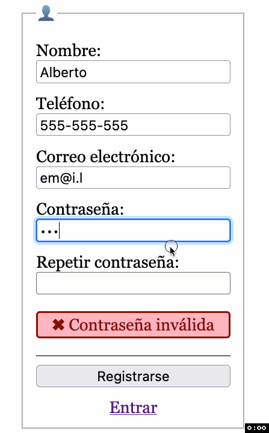
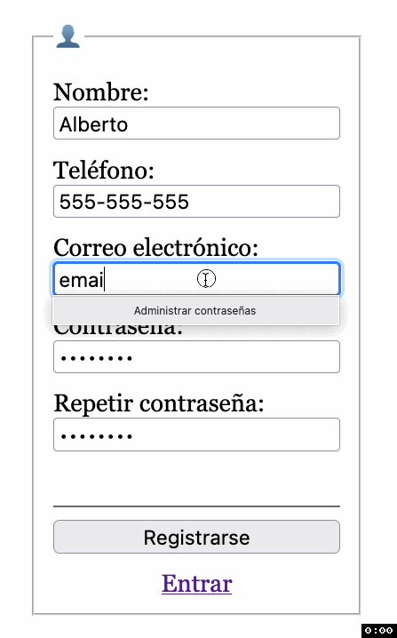

HTML+CSS+JS
Registro
Sobre el proyecto descargado y abierto en el VSCode realiza las siguientes tareas para conseguir este resultado en la página de registro:
| Contraseñas no coinciden | Usuario ya registrado |
|---|---|
|  |  |
📚 Tarea 4: Añade los campos que faltan al formulario de registro.
📚 Tarea 5: Valida que la contraseña tenga al menos 8 caracteres, que tenga al menos un número, una mayúscula y una minúscula con este patrón
^(?=.*[0-9])(?=.*[A-Z])(?=.*[a-z]).*$, y que ambas contraseñas coincidan mientras se introducen. Utiliza el DOM para obtener el valor de los campos en JS.
📚 Tarea 6: Completa la funcionalidad de registrarse llamando al API de crear usuario con los datos del formulario en formato JSON. En caso de éxito, navega a la página
login.html?registrado. En caso de fallo, muestra el aviso de "✖︎ Usuario ya registrado". Si hay errores en la contraseña, evita hacer la llamada.